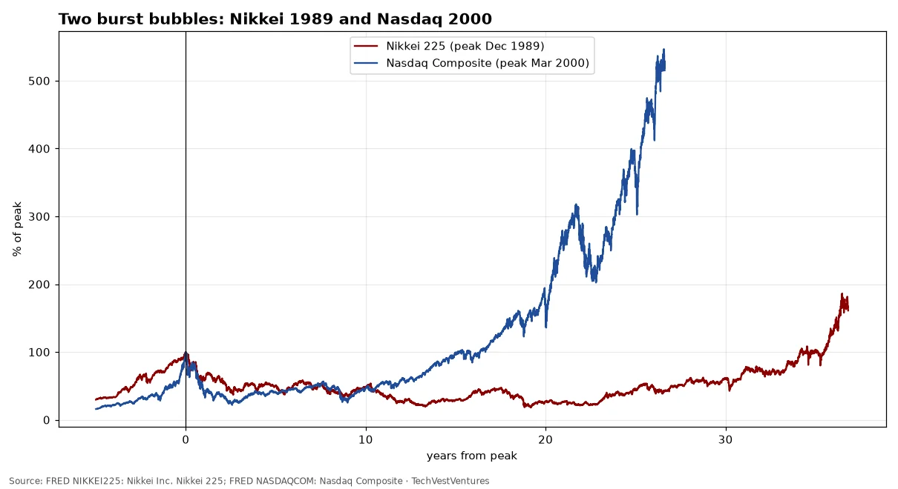
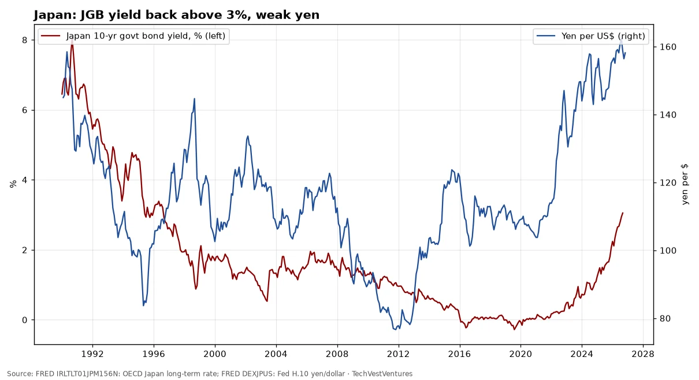
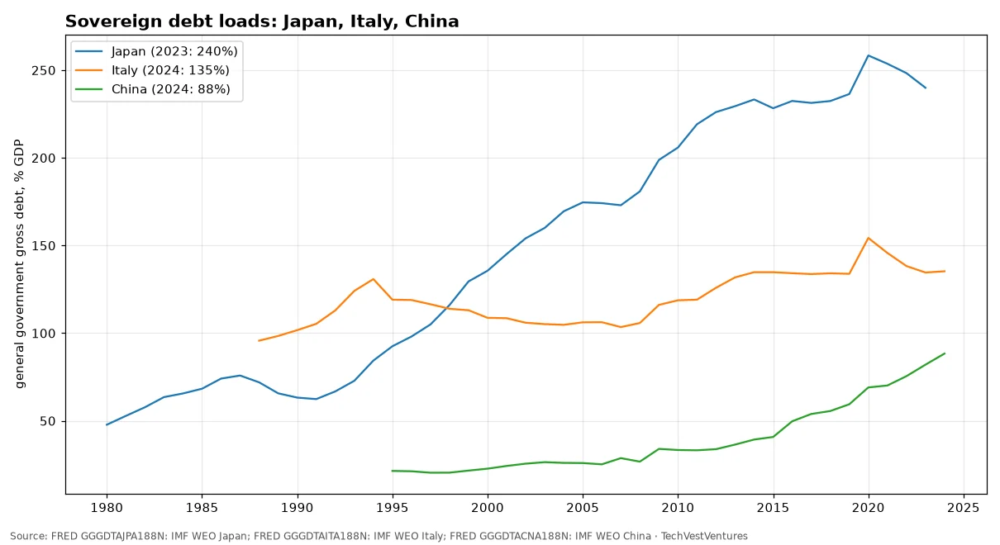
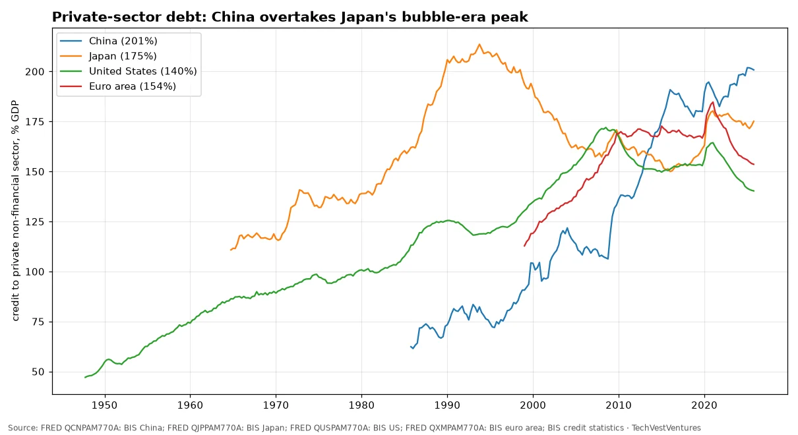
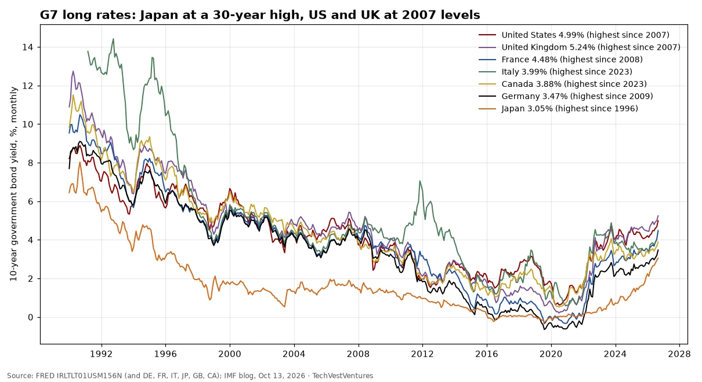

Q5. Japan Rates

Both indexes indexed to their peaks. The Nikkei 225 fell to about 18% of its 1989 peak and did not regain it until Feb 2024, over 34 years. The Nasdaq lost about 78% and recovered in Apr 2015. Two cases only: they show what a bubble deflation can look like, not that one is due.
Sources: FRED NIKKEI225: Nikkei Inc. Nikkei 225 FRED NASDAQCOM: Nasdaq Composite

Japan's 10-year government bond yield averaged 3.05% in Sep 2026 (OECD monthly), the highest since 1996 in this series, after hovering near zero in 2016–2021. The yen was 158 per dollar on Oct 16, 2026. Rising JGB yields matter because Japan's gross government debt is over 230% of GDP and Japanese investors are large holders of foreign bonds.
Sources: FRED IRLTLT01JPM156N: OECD Japan long-term rate FRED DEXJPUS: Fed H.10 yen/dollar

IMF World Economic Outlook general government gross debt, % of GDP (latest year in FRED shown in legend). China's ratio has more than doubled since the mid-2010s on the IMF measure, which excludes much local-government financing-vehicle debt.
Sources: FRED GGGDTAJPA188N: IMF WEO Japan FRED GGGDTAITA188N: IMF WEO Italy FRED GGGDTACNA188N: IMF WEO China

BIS total credit to the private non-financial sector (households and companies). China reached 201% of GDP in Oct 2025, up from 107% in 2008. Japan's ratio peaked at 214% in Oct 1993 before its lost decades; the BIS has long flagged rapid credit build-ups as a crisis warning.
Sources: FRED QCNPAM770A: BIS China FRED QJPPAM770A: BIS Japan FRED QUSPAM770A: BIS US FRED QXMPAM770A: BIS euro area BIS credit statistics

Monthly 10-year government bond yields (OECD via FRED), latest Sep 2026 (Italy Aug). Japan's 3.05% is the highest since 1996; the UK's 5.24% and the US 4.99% are the highest since mid-2007; France since 2008 and Germany since 2009. The IMF's Oct 13 blog says the G7 average 10-year yield is the highest in nearly two decades and warns of the fiscal stakes. Cycle count: since 1990 the US 10-year has made three major cyclical peaks (late 1994, early 2000, mid-2007); two were followed by a US recession within about 1-2 years (2001, 2008-09) and one by a soft landing (1995). Three cycles with a 2-of-3 hit rate is right at Michael Hentschel's threshold, so read it as a warning, not a prediction.
Sources: FRED IRLTLT01USM156N (and DE, FR, IT, JP, GB, CA) IMF blog, Oct 13, 2026